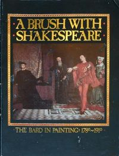

A Brush with Shakespeare: The Bard in Painting, 1780-1910
I saw this exhibit when it came through Chicago, and it was great fun. The Victorians...
Download or read A Brush with Shakespeare: The Bard in Painting, 1780-1910 in PDF formats. You may also find other subjects related with A Brush with Shakespeare: The Bard in Painting, 1780-1910.
- Filetype: PDF
- Pages: 94 pages
- ISBN: 9780892800247 / 892800240
HkckeHY1CiO-.pdf
More About A Brush with Shakespeare: The Bard in Painting, 1780-1910
I saw this exhibit when it came through Chicago, and it was great fun. The Victorians had some mighty good melodrama going in their Shakespearean paintings. It was wonderful to be able to see original works by Fuseli, Richard Dadd, Edwin Austin Abbey, and many others.The catalogue is okay. The discussions are good. But most of the reproductions...